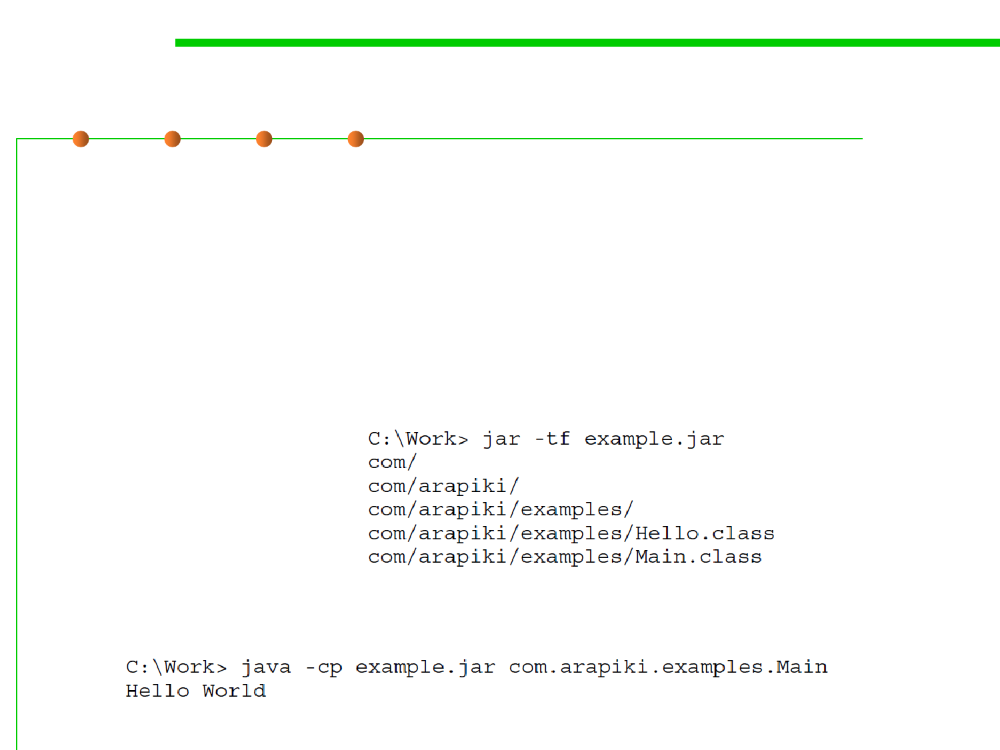

Libraries in Java
2.2 Process, Systems, and Tools of Software Construction
▪ In addition to specifying a list of directories in which .class files can
be found, Java classes can be placed into larger archive files, known
as JAR files.
▪ Most Java applications prefer the JAR file format (with a .jar suffix),
simply because it’s easier to manipulate JAR files than package and
distribute a large number of .class files.
▪ To create a JAR file:
▪ To use a JAR file: